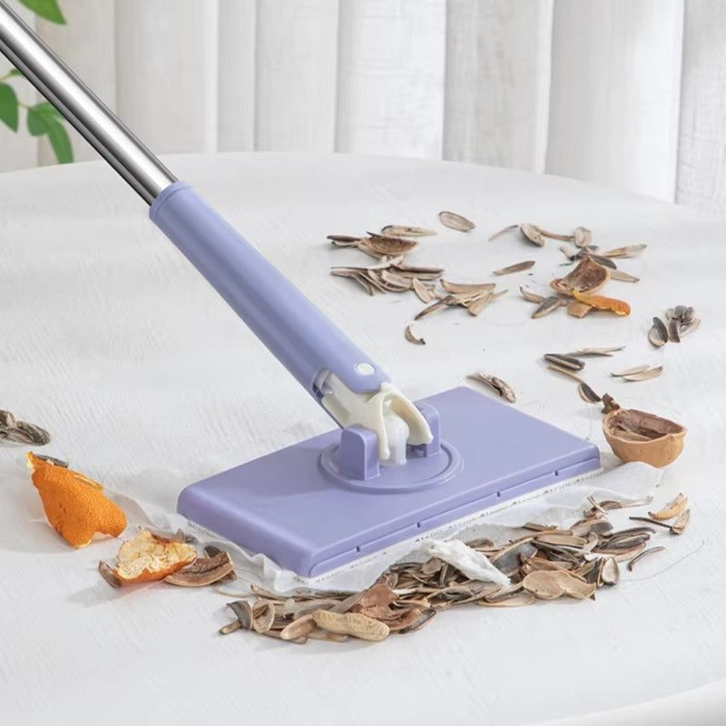
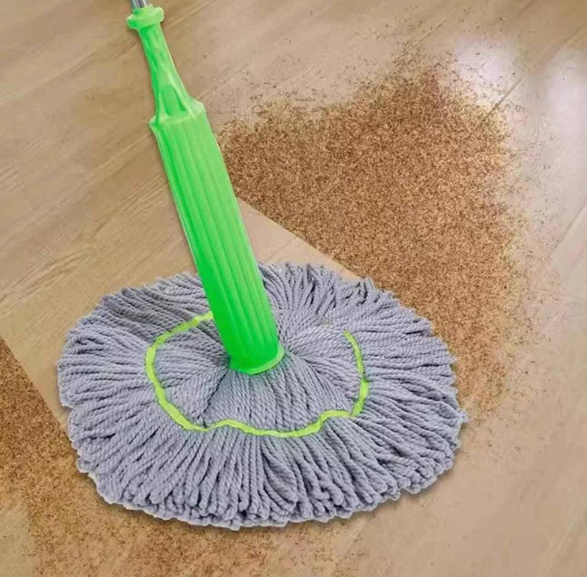

In Pakistan, the ceiling fan is the hardest-working appliance in the house. It runs almost non-stop from April to October, cools rooms during load shedding when the AC is off, and keeps mosquitoes away at night. Over winter, though, fans sit still and collect a thick layer of dust, smog particles and grease, especially in kitchens and lounges. The first time you switch them on in spring, that dust showers onto beds, sofas and everyone underneath.
Cleaning fans before summer protects your health, improves airflow and saves electricity, since dirty blades work harder. Here is a simple method that keeps the mess to a minimum.
Why dirty fans are a problem
Dust on fan blades contains fine particles, pollen and allergens. When the fan spins, it spreads them through the room, triggering sneezing, coughing and asthma in sensitive people. In cities like Lahore, where winter smog is severe, the dust is even more harmful. Dirty blades also become unbalanced and wobble, which strains the motor.
Safety first
Always switch the fan off at the switchboard and wait until it stops completely. Use a sturdy ladder or a strong table, never a plastic chair or a stool with wobbly legs. Ask someone to hold the ladder. If your ceilings are very high, use a long-handled duster instead of climbing. Wear a mask, because a lot of dust will be released.

The pillowcase trick
This is the easiest way to clean fan blades without spreading dust. Take an old pillowcase and slide it over one blade so the blade is fully inside. Press gently on both sides and pull the pillowcase back towards you. The dust stays inside the case instead of falling onto the floor. Repeat for each blade. Shake the pillowcase outside afterwards and wash it.
Tools that make it faster
For regular maintenance, a few good tools save effort:
- A microfibre duster grabs dust instead of scattering it
- A long-handled, adjustable mop or duster reaches high fans without a ladder
- A small spray bottle with mild soapy water removes grease
- A dry microfibre cloth for a final wipe
Families with many fans in the house often keep one dedicated duster just for fans and high places. If you are buying one, you can find options among cleaning tools on Trenducts.
Removing grease from kitchen fans
Kitchen fans collect oil from cooking, which mixes with dust into a sticky layer. After removing loose dust, spray the blades with warm water mixed with dishwashing liquid, or a little vinegar. Let it sit for a minute, then wipe with a cloth. For stubborn grease, a paste of baking soda and water works well. Dry blades completely before switching the fan on.

Do not forget the motor housing and rod
The rod and motor cover also collect dust. Wipe them with a damp cloth. Check that the canopy at the ceiling is fixed tightly and that the fan does not wobble. If it does, tighten the blade screws. A fan that still wobbles after cleaning may need balancing by an electrician.
How often to clean
Give fans a thorough clean at the start of summer and again at the end of the season before winter. During summer, a quick dusting every two or three weeks keeps them in good condition, more often in kitchens and in homes near busy roads or construction.
Clean from top to bottom
When cleaning a room, always start with fans and high surfaces, then move to furniture, and finish with the floor. Dust falls downward, so cleaning floors first means doing them twice. A spring clean that follows this order saves time and energy.
Final thoughts
A clean ceiling fan gives cleaner air, better cooling and a quieter motor all summer long. Switch it off safely, use the pillowcase trick, keep a good microfibre duster handy and clean regularly. Your family will breathe easier when the first hot days of summer arrive.